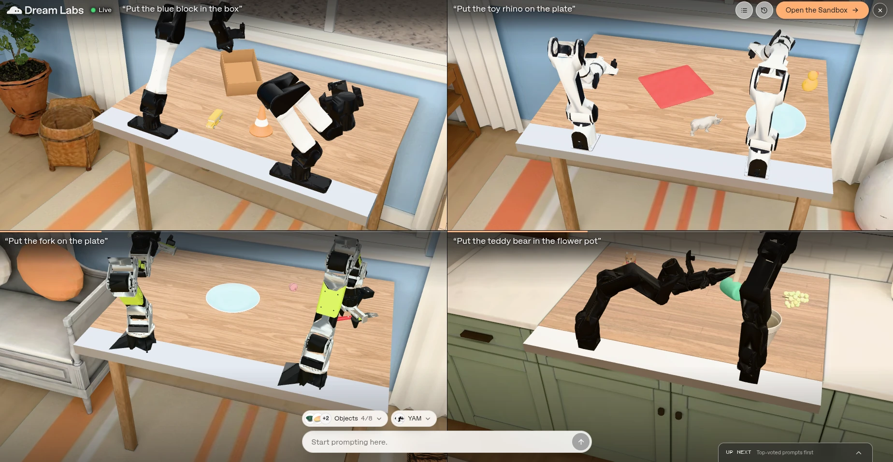

Industry briefing · October 2026
Physical AI
in Production
Where robot foundation models are shipping today, and where they’re still in pilots
VLA models
Humanoids
Robot fleets
ROS 2
LJ
Lentin Joseph
CEO, RUNTIME Robotics · Author of 11 books on ROS and robotics
Overview
Agenda
What we’ll cover
01
What Physical AI is, and how far it has come
Slides 3–8
02
The models powering real robots
Slides 9–14
03
Deployments, plus China and India
Slides 15–22
04
Business models, enablers and hard problems
Slides 23–26
05
Taking a model to production
Slides 27–36
06
Outlook, takeaways and how to start
Slides 37–40
Lentin Joseph · Physical AI in Production
02 / 43
01
Foundations
What Physical AI is, how a VLA model works, and how far deployments have come.
01 · Foundations
02 · The models
03 · Deployments
04 · Market and hard problems
05 · Taking a model to production
06 · Outlook and next steps
01 · Foundations
The concept
What “Physical AI” means
AI models that perceive, reason about and act in the physical world, learning behaviors from data instead of being hand-programmed for each task.
Sense
Cameras, depth, lidar, force and touch sensors
Reason
VLA models, world models and fleet models
Act
Real-time commands for arms, legs, wheels and grippers
Improve
Teleoperation, simulation, synthetic video and fleet logs feed retraining
Lentin Joseph · Physical AI in Production
04 / 43
01 · Foundations
From words to actions
LLM, VLM, VLA: what’s the difference?
LLM
Large Language Model
In: text
Out: text
e.g. GPT, Claude, Llama
“Pick up the red cup” → writes the steps
+ vision
VLM
Vision-Language Model
In: images + text
Out: text
e.g. PaliGemma, Qwen-VL, LLaVA
“Pick up the red cup” → “It’s on the left of the table”
+ action
VLA
Vision-Language-Action
In: images + text + robot state
Out: robot actions
e.g. π0, OpenVLA, GR00T
“Pick up the red cup” → moves the arm and grasps it
In one line: a VLA is a VLM that can also move. It outputs motor commands, not just words.
Lentin Joseph · Physical AI in Production
05 / 43
01 · Foundations
Under the hood
How a VLA model works
Input
Observe
Camera images, instruction, robot state
See
Vision encoder
SigLIP, DINOv2
Think
Language backbone
PaliGemma, Llama, Qwen, Eagle
Act
Action head
Flow matching, diffusion or action tokens
Output
Action chunk
e.g. the next 50 joint targets
How the open models put it together
π0
PaliGemma 3B + flow-matching action expert
OpenVLA
Llama 2 7B + SigLIP/DINOv2; actions as tokens
GR00T N1
Eagle VLM (slow) + diffusion transformer (fast)
SmolVLA
SmolVLM + small flow-matching expert
The idea: the language model brings general knowledge; the action head turns it into smooth, fast motor commands.
Lentin Joseph · Physical AI in Production
06 / 43
01 · Foundations
Maturity check
Three levels of maturity
1 · In production
High
Warehouses, logistics and robotaxis
Amazon, Agility × GXO, Ultra, Dyna Robotics, Waymo
2 · Paid pilots
Medium
Humanoids in factories
Figure × BMW, Atlas × Hyundai, Apptronik, Hexagon AEON, Skild × Foxconn
3 · Announced
Early
Robots in the home
1X NEO is on pre-order; no confirmed volume deliveries yet
The more structured the environment, the further along the deployment.
Lentin Joseph · Physical AI in Production
07 / 43
01 · Foundations
How we got here
From pilots to paid work, 2024–2026
Jun 2024
Agility × GXO
First multi-year humanoid robots-as-a-service deal
Apr 2025
DYNA-1
Dyna unveils a robot model built for commercial uptime
Jul 2025
Amazon DeepFleet
Fleet model launches as Amazon passes 1M robots
Nov 2025
π*0.6
A VLA that learns from real-world experience
Mar 2026
NVIDIA GTC
Partner wave: KION, Foxconn, Skild, Data Factory
Mid-2026
Figure 03 at BMW
Humanoid at work on the Spartanburg plant floor
In about two years, Physical AI went from first commercial contracts to fleet-scale use in warehouses and humanoids on factory floors.
Lentin Joseph · Physical AI in Production
08 / 43
02
The models
The foundation models behind real robots, the open ones you can download, and how they work.
01 · Foundations
02 · The models
03 · Deployments
04 · Market and hard problems
05 · Taking a model to production
06 · Outlook and next steps
02 · The models
The model landscape
Models powering real robots
| Model | Company | What it is | Stage | Where |
|---|---|---|---|---|
| π0 → π0.6 | Physical Intelligence | Licensed VLA for many robots | LIVE | Ultra order packing |
| DeepFleet | Amazon | Fleet coordination model | LIVE | 1M+ Amazon robots |
| DYNA-1 / DYNA-2 | Dyna Robotics | Dual-arm manipulation model | LIVE | Service businesses |
| Helix | Figure AI | Onboard humanoid VLA | PILOT | BMW Spartanburg |
| Skild Brain | Skild AI | General-purpose robot brain | PILOT | Foxconn assembly lines |
| GR00T N + Cosmos | NVIDIA | Open VLA + world models | PLATFORM | Partner training and simulation |
| Gemini Robotics ER 2 | Google DeepMind | Planner over lower-level VLAs | PREVIEW | Public API; enterprise preview |
| Dream-1 | Dream Labs | Cross-robot brain via API | PLATFORM | Dream API and playground |
LIVE paid production use · PILOT paid trials with named customers · PLATFORM / PREVIEW available to developers
Lentin Joseph · Physical AI in Production
10 / 43
02 · The models
Open models · newest first
Open VLAs you can download today
| Model | Organization | Size | Released | License |
|---|---|---|---|---|
| LingBot-VLA 2.0 | Robbyant (Ant Group) | 6B | Jul 2026 | Apache-2.0 |
| WALL-OSS 0.5 | X Square Robot | 4B | May 2026 | Apache-2.0 (code) |
| MolmoAct2 | Ai2 | ~5B | May 2026 | Apache-2.0 (code) |
| GR00T N1.7 | NVIDIA | 3B | Feb 2026 | NVIDIA Open Model License |
| X-VLA | X-VLA team | 0.9B | Nov 2025 | Apache-2.0 |
| π0.5 / π0 (openpi) | Physical Intelligence | ~3B | Sep 2025 | Apache-2.0 code; Gemma terms |
| GO-1 | AgiBot | 2B base | Sep 2025 | CC BY-NC-SA (non-commercial) |
| SmolVLA | Hugging Face | 0.45B | Jun 2025 | Apache-2.0 |
| OpenVLA-OFT | Stanford | 7B | Feb 2025 | MIT |
| OpenVLA | Stanford | 7B | Jun 2024 | MIT |
Before shipping: check each model card. GO-1 is non-commercial; GR00T weights use NVIDIA’s own license; most run in LeRobot.
Lentin Joseph · Physical AI in Production · Source: Hugging Face model cards
11 / 43
02 · The models
Open models · the trend
A new open VLA every few months
OpenVLA · 7B
OpenVLA-OFT · 7B
SmolVLA · 0.45B
GO-1 · ~2B
π0.5 · ~3B
X-VLA · 0.9B
GR00T N1.7 · 3B
WALL-OSS 0.5 · 4B
MolmoAct2 · ~5B
LingBot-VLA 2.0 · 6B
0B
2B
4B
6B
8B
Jun 2024
Jan 2025
Jul 2025
Jan 2026
Jul 2026
Ten open models in two years, from 0.45B to 7B; orange marks the 2026 releases.
Lentin Joseph · Physical AI in Production · Size (y) by release date (x)
12 / 43
02 · The models
Spotlight · Robot brain as an API
Dream Labs: one brain, many robots
You send
Camera images, robot state and a task
Dream API
Dream-1
You get
Actions for your robot to execute
Works across robots
Runs on its own bimanual YAM and popular low-cost arms; a few hundred demos adapt it to a new body.
Zero-shot claims
The company says it handles new tasks and new scenes it has never seen.
Built for developers
API access, a remote Robot Playground and fine-tuning that returns a model ID.
Why it matters: robot brains sold the way developers already buy LLMs. dreamlabs.ai
Lentin Joseph · Physical AI in Production · Source: Dream Labs
13 / 43
02 · The models
Demo · Dream Labs Robot Playground
Prompt a robot in plain language

How it works
- Type a task, like “Put the fork on the plate”
- Pick the objects and the robot body, such as YAM
- Dream-1 turns camera images and the prompt into actions
- Top-voted prompts from viewers run next
Lentin Joseph · Physical AI in Production · Screenshot: Dream Labs
14 / 43
03
Deployments
Where Physical AI works today: warehouses, factories and homes, plus the race in China and India.
01 · Foundations
02 · The models
03 · Deployments
04 · Market and hard problems
05 · Taking a model to production
06 · Outlook and next steps
03 · Deployments
Level 1 · In production
Shipping today
Amazon Robotics
Fleet and manipulation
DeepFleet coordinates 1M+ robots; Vulcan picks items with a sense of touch.
Agility Digit × GXO
Logistics humanoid
Multi-year robots-as-a-service deal; moving totes in Georgia, reportedly 100k+.
Ultra
E-commerce packing
Live order packing running Physical Intelligence’s π0.6 model.
Dyna Robotics
Service robots
Folding, food prep and packaging, about 16 hours a day at hotels and laundromats.
KION forklifts
With NVIDIA and Accenture
Jetson-based autonomous forklifts for GXO, trained in warehouse digital twins.
Waymo
Robotaxis
500k+ paid rides a week (Mar 2026), driven by the Waymo Foundation Model.
Lentin Joseph · Physical AI in Production
16 / 43
03 · Deployments
Spotlight
Amazon shows what scale looks like
1M+
robots deployed across Amazon’s operations network
~10%
expected gain in fleet travel efficiency from DeepFleet
1st
Amazon robot with a sense of touch: Vulcan
Lesson: foundation models pay off first where a company already owns huge amounts of its own robot data.
Lentin Joseph · Physical AI in Production · Source: Amazon
17 / 43
03 · Deployments
Level 2 · Paid pilots
Humanoids: long pilots in factories
| Robot / model | Customer | Status |
|---|---|---|
| Figure 02 / 03 + Helix | BMW | Figure 02: ~1,250 hours, 90,000+ parts; Figure 03 now in logistics |
| Boston Dynamics Atlas | Hyundai | Pilot in Korea; 2026 production units reportedly committed |
| Apptronik Apollo | Logistics customers | Logistics pilots |
| Hexagon AEON | Schaeffler, BMW | Industrial pilots |
| Skild AI | Foxconn | Precision assembly on NVIDIA Blackwell lines |
| Tesla Optimus | Tesla (internal) | No external customer deployments recorded |
The milestone to watch: pilots that turn into fleet orders, not more pilots.
Lentin Joseph · Physical AI in Production
18 / 43
03 · Deployments
See it in action
Physical AI on the job: four videos
Lentin Joseph · Physical AI in Production · Videos open on their original sites
19 / 43
03 · Deployments
Level 3 · Announced
Home robots: announced, not yet delivered
1X NEO
Home humanoid
Pre-orders open with a $200 deposit. Deliveries were promised for 2026; none confirmed yet.
Unitree G1
Low-cost humanoid
Starts at $13,500. Sold mostly to research and development labs today.
Why homes are hardest
- Unstructured, ever-changing spaces
- People, children and pets nearby
- Price must fit a household budget
Watch for: delivery numbers and reliability data from real homes, not demo videos.
Lentin Joseph · Physical AI in Production
20 / 43
03 · Deployments
Global race · China
China leads on humanoid volume
86–97%
of global humanoid shipments in H1 2026 came from Chinese makers
~20k
humanoids shipped worldwide in H1 2026, about 3× a year earlier
$9B
Unitree’s IPO valuation; listed on Shanghai’s STAR Market, Aug 2026
Share of H1 2026 humanoid shipments · Counterpoint
AgiBot
43%
Unitree
31%
Galbot
5%
UBTech
~4.5%
Leju
2.9%
Rest of world
14%
Lentin Joseph · Physical AI in Production · Trackers vary
21 / 43
03 · Deployments
Global race · India
India is building its Physical AI base
Addverb
Reliance-backed · Noida
Launched Elixis-W, a wheeled industrial humanoid, at LogiMAT India 2026; about 100 units planned for supervised pilots.
CynLr
Bengaluru
Vision-first robots that pick unknown objects from cluttered bins, a long-standing hard problem.
Ati Motors
Bengaluru
Autonomous vehicles for messy automotive factory floors and outdoor industrial yards.
Policy
MeitY’s draft National Strategy on Robotics proposes a National Robotics Mission, with manufacturing, healthcare, agriculture and security as focus sectors. Final approval is not yet confirmed.
The opening for India: robot software, systems integration and cost-efficient deployment in manufacturing.
Lentin Joseph · Physical AI in Production
22 / 43
04
Market and hard problems
How the business is forming, what makes deployment possible, and why it is harder than chatbots.
01 · Foundations
02 · The models
03 · Deployments
04 · Market and hard problems
05 · Taking a model to production
06 · Outlook and next steps
04 · Market and hard problems
Market dynamics
Two business models are forming
Build the whole robot
Figure, Tesla, 1X, Dyna
Robot
Model
Data
One company owns all three
Own the hardware, the model and the data loop. Tighter integration, but every robot is built in-house.
License the brain
Physical Intelligence, Skild AI, NVIDIA GR00T, Dream Labs
One model
Maker A
Maker B
Maker C
One model across many robot makers. Scales faster, but depends on partners’ hardware and data.
How customers pay: robots-as-a-service is common, as in Agility’s multi-year deal with GXO.
Lentin Joseph · Physical AI in Production
24 / 43
04 · Market and hard problems
The enabling layer
What makes deployment possible
Digital twins and simulation
NVIDIA Isaac and Omniverse; ABB, FANUC, Yaskawa and KUKA use them to commission lines virtually.
Synthetic data
Cosmos world models generate training video; the Physical AI Data Factory runs on Azure and Nebius.
Onboard compute
Models run on the robot itself, like Helix on embedded GPUs, so control never waits on the cloud.
Human demonstrations
Teleoperation data remains the core training signal for manipulation tasks.
Most teams buy this layer rather than build it: it is the shared foundation under every robot.
Lentin Joseph · Physical AI in Production
25 / 43
04 · Market and hard problems
The hard part
Why it’s harder than chatbots
Real-time control
Actions must arrive within milliseconds, on the robot, every time.
Cost of failure
A wrong action can damage equipment or injure people.
Data scarcity
No internet-scale robot dataset exists; teleoperation and simulation fill the gap.
Sim-to-real gap
Skills learned in simulation must survive real friction, lighting and wear.
The result: deployments trail demos, and structured sites go first.
Lentin Joseph · Physical AI in Production
26 / 43
05
Taking a model to production
A technical playbook: from task spec and data to safety, deployment and the data flywheel.
01 · Foundations
02 · The models
03 · Deployments
04 · Market and hard problems
05 · Taking a model to production
06 · Outlook and next steps
05 · Taking a model to production
Taking a model to production
The production loop
Build · stages 1–3
Prove · 4–5
Run · stages 6–8
1
Define the job
2
Collect data
3
Adapt the model
4
Evaluate in stages
5
Engineer safety
6
Deploy on the robot
7
Run a pilot
8
Operate and improve
Interventions and fleet logs from stage 8 flow back into stage 2 as new training data
Each step up in exposure, from simulation to a whole fleet, is earned with evidence from the step before.
Lentin Joseph · Physical AI in Production
28 / 43
05 · Taking a model to production
Stages 1–2 · Define and collect
Specify the job, then build the data
1 · Write the spec
- Scene envelope: objects, lighting, clutter and how much they vary
- Task metrics: success rate, cycle time, units per hour
- Reliability: mean time between interventions (MTBI)
- Safety envelope: speeds, forces, zones, people nearby
- Unit economics: cost per task vs. people or fixed automation
2 · Build the dataset
- Teleoperation: leader-follower arms (ALOHA, GELLO) or VR
- Simulation: Isaac Lab or MuJoCo with domain randomization
- Synthetic video: world models such as NVIDIA Cosmos
- Fleet logs: ROS 2 recordings (rosbag2, MCAP) and interventions
- Versioning: LeRobot or RLDS datasets, versioned like code
Coverage beats volume: collect the failures and edge scenes, not more of the easy cases.
Lentin Joseph · Physical AI in Production
29 / 43
05 · Taking a model to production
Stage 3 · Adapt the model
Build, fine-tune or call an API?
| Train your own | Fine-tune a foundation model | Call a model API | |
|---|---|---|---|
| Data needed | Very large, multi-robot datasets | Hundreds to thousands of task demos | A few hundred demos to fine-tune, or none |
| Time to first robot | Months to years | Weeks | Days |
| Control and IP | Full: weights, data and roadmap | High: you hold the tuned weights | Low: the vendor owns model and updates |
| Runtime | On-robot, fully optimized | On-robot after optimization | Network round trip, unless run on-robot |
| Examples | Figure Helix, Tesla | π0 / openpi, GR00T N, OpenVLA | Dream API, Gemini Robotics ER |
Common path: fine-tune a foundation model on task demos, then improve it with reinforcement learning from real deployment.
Lentin Joseph · Physical AI in Production · Times are typical ranges
30 / 43
05 · Taking a model to production
Stage 4 · Evaluate in stages
The evaluation ladder
Step 1
Simulation
Proves: task logic across thousands of randomized scenes.
Exit: success target met on randomized episodes.
Step 2
Lab bench
Proves: real sensors and contact physics; the sim-to-real gap.
Exit: target met on a fixed real test set and held-out objects.
Step 3
Shadow mode
Proves: behavior on the live line. The model proposes; people or the legacy system act.
Exit: proposals agree with what was actually done.
Step 4
Supervised pilot
Proves: throughput and reliability in real production.
Exit: intervention rate and cycle time meet the spec.
Regression rule: every new model version re-runs the test sets and must beat the version already shipped.
Lentin Joseph · Physical AI in Production
31 / 43
05 · Taking a model to production
Stage 5 · Engineer safety
Bound the model, don’t trust it
L1
Foundation model
Proposes action chunks. Untrusted: may be wrong at any moment.
L2
Action guard
Clamps joint limits, speed and workspace; checks collisions before execution.
L3
Real-time controller
Tracks trajectories at roughly 500 Hz–1 kHz; rejects infeasible commands.
L4
Safety-rated functions
Speed and separation monitoring, power and force limiting, safe torque off. Certified.
L5
Hardware
E-stop, brakes, physical guarding. Certified.
Authority grows downward: each lower layer can override everything above it, and only L4–L5 carry safety certification.
Standards: ISO 10218-1/-2 (industrial robots) · ISO/TS 15066 (collaborative operation) · ISO 13849-1 (safety-related controls) · ISO 25785-1 (dynamically stable mobile robots, committee draft)
Lentin Joseph · Physical AI in Production
32 / 43
05 · Taking a model to production
Stage 6 · Deploy on the robot
Fit the model inside the control loop
Three loops, three rates
Planner (VLM)
~7–9 Hz in Helix
Visuomotor policy
~200 Hz in Helix
Joint control
~1 kHz on the drives
Slow reasoning, fast reflexes: the fast loops never wait on the slow ones.
Make it fit
- Quantize FP16 → FP8/INT8 with TensorRT; re-test success after each step
- Chunk actions: compute the next chunk while this one executes (π0: 50-step chunks)
- Distill big models into small student policies where deadlines are tight
- Stay on-robot for perception and control; use the cloud for logs and retraining
- Watchdog: no fresh action by the deadline means a safe stop
Lentin Joseph · Physical AI in Production · Rates: Figure Helix; π0 paper
33 / 43
05 · Taking a model to production
Stage 6 in detail · Reference architecture
A Physical AI robot on ROS 2
Fleet cloud
Task API · episode logs (MCAP) · training and evaluation · model registry · staged OTA updates
On the robot · ROS 2 nodes on embedded GPU
Sensors
Cameras, depth, force-torque, joint states
Perception
Image pipeline, calibration, state estimate
VLA policy
Task + images → action chunks (TensorRT)
Action guard
Limits, workspace, collisions, watchdog
ros2_control
Controllers and hardware interface
Drives
Motors, brakes, encoders
sensor_msgs/Image + JointState → policy → trajectory_msgs/JointTrajectory → controller
Safety controller
Independent of ROS, wired to the drives: e-stop · safe torque off · speed and separation monitoring
Lentin Joseph · Physical AI in Production
34 / 43
05 · Taking a model to production
Stages 7–8 · Pilot, then operate
Staged rollouts and the data flywheel
Rollout ladder for each new model version
1 robot
1 work cell
1 site
Whole fleet
Advance only if: intervention rate is no worse than the shipped version · no new safety events · automatic rollback is armed
The data flywheel
1 · Deploy the current version
2 · Log every episode: video, state, actions
3 · Flag interventions and failures
4 · Curate and label the hard cases
5 · Retrain or apply RL from experience
6 · Re-run the ladder, then back to 1
Watch: MTBI · interventions per hour · success rate · cycle time · safety events · fleet share per model version
Lentin Joseph · Physical AI in Production
35 / 43
05 · Taking a model to production
Before you scale
Production-readiness checklist
Task spec with measurable targets, signed off
Risk assessment done; safety functions certified
Versioned dataset that includes failures and edge cases
Model meets its control deadline on the robot
Regression suite: sim plus real held-out scenes
Watchdog and safe-stop fallback tested
Shadow-mode results meet the spec
Every episode and intervention is logged
Pilot hits its intervention-rate target
Staged OTA rollout with tested rollback
Plus the human side: trained operators, a clear escalation path, and a named owner for every robot.
Lentin Joseph · Physical AI in Production
36 / 43
06
Outlook and next steps
What to watch next, the key takeaways, and how to get started.
01 · Foundations
02 · The models
03 · Deployments
04 · Market and hard problems
05 · Taking a model to production
06 · Outlook and next steps
06 · Outlook and next steps
Outlook
What to watch in the next 12 months
01
VLAs as the main control policy
One industry report claims 11+ deployments; watch for named customers and results.
02
Pilots turning into fleet orders
BMW Leipzig, Hyundai’s Atlas fleet and Agility’s order book are the bellwethers.
03
First home-robot deliveries
Whether 1X NEO ships in volume, and how reliable it is in real homes.
04
Safety standards for humanoids
Emerging rules for legged robots that work near people without safety cages.
05
Licensed brains versus in-house stacks
Whether π, Skild, GR00T and Dream-1 win robot makers over from building their own.
Lentin Joseph · Physical AI in Production
38 / 43
06 · Outlook and next steps
Summary
Key takeaways
1
Physical AI is in production where spaces are structured and data is plentiful: warehouses and logistics.
2
Humanoids are in long paid pilots; the next year tests whether they become fleet orders.
3
The stack is splitting into robot makers, model licensors and a simulation and compute layer beneath both.
4
Production is a loop with safety gates: bound the model, measure interventions, and let fleet data improve it.
Lentin Joseph · Physical AI in Production
39 / 43
06 · Outlook and next steps
Your next step
Get started this quarter
Student or maker
Learn by building
- Build a low-cost SO-101 arm and record demos with LeRobot
- Train ACT or SmolVLA on your own task
- Prompt real robots in the Dream Labs playground
Robotics engineer
Fine-tune a foundation model
- Fine-tune openpi (π0) or GR00T N on your own demos
- Evaluate in Isaac Lab or MuJoCo before hardware
- Wrap the policy as a ROS 2 node behind an action guard
Company
Run one focused pilot
- Pick one structured, repetitive task with a clear metric
- Run it through the 8-stage loop in a time-boxed pilot
- Track MTBI and cost per task from day one
Start small, measure everything, and let the data flywheel do the rest.
Lentin Joseph · Physical AI in Production
40 / 43
References
References
Sources and caveats
Read with care
Most figures come from industry trackers and vendor announcements, not audited filings. Unit counts and model versions differ between sources. Check primary announcements before relying on a specific number.
- Capgemini Research Institute: Physical AI report (Apr 2026)
- NVIDIA: GTC 2026 robotics press release
- Amazon: 1 millionth robot and DeepFleet
- DeepFleet paper (arXiv 2508.08574)
- Figure AI: Helix
- π0 paper (arXiv 2410.24164)
- MarkTechPost: Top 10 Physical AI models (Apr 2026)
- Open Data Science: Physical AI in 2026
- TechTimes: Dyna DYNA-2 (Aug 2026)
- Dream Labs: Dream-1 and Dream API · Robot Playground
- Hugging Face LeRobot · openpi · Isaac GR00T
- Humanoid Deployment Tracker
- Survey of VLA models (arXiv 2505.04769)
Lentin Joseph · Physical AI in Production
41 / 43
References
References · continued
Sources for the latest checks
Checked October 2026
Waymo, Figure at BMW, ISO 25785-1, China and India. Shipment trackers disagree, so the China slide shows ranges, not single numbers.
- Waymo: Demonstrably safe AI (Dec 2025) · 500k rides a week
- Figure 02 completes BMW project · Figure 03 in logistics
- ISO/CD 25785-1 (committee draft)
- TechNode: China >97% of H1 shipments
- The Standard: Counterpoint, 22,000+ units
- UBTech interim results (HKEX filing)
- NBC News: Unitree’s market debut
- Addverb at LogiMAT India 2026 · Inc42
- MeitY: draft National Strategy on Robotics
Lentin Joseph · Physical AI in Production
42 / 43
Thank you · Questions?
Let’s build
real robots.
Lentin Joseph
CEO, RUNTIME Robotics
Author of 11 books on ROS and robotics, including Mastering ROS 2 for Robotics Programming
Scan for the slides
runtimerobotics.github.io/
physical-ai-in-production
43 / 43